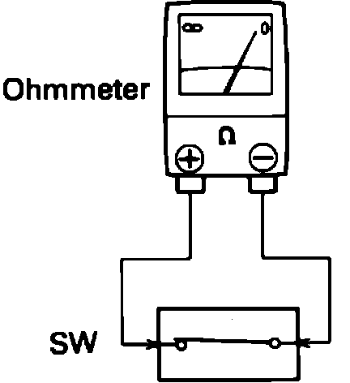
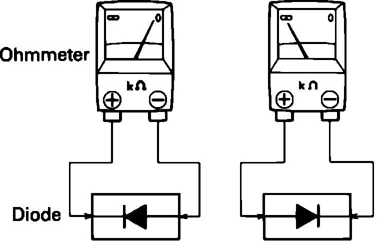

Continuity and Resistance Check
Meter Types:

1. Use a digital or analog multimeter with a minimum 10k ohm resistance.
2. Disconnect the battery or connector so there is no power between the check points.
3. Set the ohmmeter to the appropriate range.
Continuity And Resistance Check:

4. Connect the two leads of the meter to each of the check points.
Diode Check:

5. If the circuit or component has diodes, reverse the leads and check again.
a. When contacting the negative lead to the diode's positive side and the positive lead to the negative side, there should be continuity.
b. When connecting the two leads in reverse, there should not be continuity.